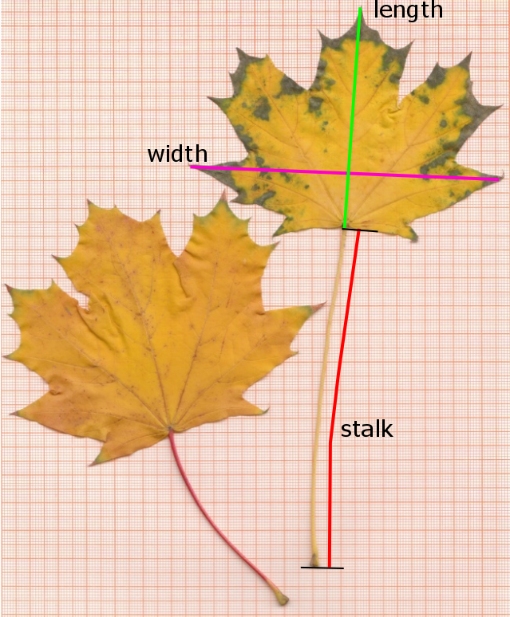

install.packages(c("dplyr", "tiryr", "lubridate", "readxl", "ggplot2"))x4-Pipelines in R
Angewandte Statistik – Ein Praxiskurs
Thomas Petzoldt
2025-10-15
Prerequisites
The examples in slis slide require the following R packages: packages, that must be installed and loaded.
Installation
Loading
The examples were tested with R 4.3.1 and RStudio 2023.06.1
An introductory example
In a statistics course, two samples of Maple (Acer platanoides) leaves were collected by two groups of students:
group HSE: had the freedom to collect leaves individually from trees close to the institute
group HYB: got a random sample from the supervisor
Hypothesis: sampling bias may affect statistical parameters, especially mean and variance.
Download the file leaves.csv, save it to a working directory and then read it with read.csv:
Have a look at the data:

A boxplot
Summary statistics
group no length width
Length:126 Min. : 1.00 Min. : 37.00 Min. : 44.0
Class :character 1st Qu.: 32.25 1st Qu.: 72.00 1st Qu.: 96.0
Mode :character Median : 63.50 Median : 90.00 Median :118.5
Mean : 63.50 Mean : 95.83 Mean :117.4
3rd Qu.: 94.75 3rd Qu.:102.00 3rd Qu.:138.5
Max. :126.00 Max. :250.00 Max. :199.0
stalk
Min. : 29.00
1st Qu.: 62.00
Median : 82.00
Mean : 81.89
3rd Qu.:101.00
Max. :175.00 Summary statistics per group
- different ways to calculate summary statistics
- classical method with
aggregate
A few examples
group length width stalk
1 HSE 137.82857 139.0286 102.02857
2 HYB 79.67033 109.1319 74.14286 group length width stalk
1 HSE 47.99356 26.07285 26.47917
2 HYB 19.93771 30.90423 25.24087 group length width stalk
1 HSE 83 87 52
2 HYB 37 44 29aggregate is very powerful, but the modern “tidyverse” approach is easier to understand. This is explained in the following.
Summary statistics with the dplyr-package
Package dplyr contains two handy functions:
group_bysummarize
The functions can be combined in different ways:
A) Two separate code lines
\(\ominus\) needs a temporary variable: leaves_grouped
B) One line, group_by enclosed in parentheses
\(\oplus\) no temporary variables necessary
\(\ominus\) nested parentheses
More streamlined: pipelines
Aim to make code easier to understand:
- avoids nested parentheses
- avoids temporary variables
Recent versions of R (since 4.1) have built-in support for pipelines:
- Native pipeline operator |>
A predecessor was the so-called “magrittr” pipeline operator %>%
- Most examples from these slides will work with both pipeline operators.
- There are a few differences regarding use of so-called placeholders.
- I recommended to prefer native pipes |>
Application of |>
The output from the first function is piped to the next
Or, even more streamlined: start pipeline with the data frame
How it works
The pipe operator |> inserts the output from one function
into the first argument of the next function.
Summary statistics for all variables
- The
leavesdataset contains different variableslength,widthandstalklength. - We can now, in principle, extend
summarize:
Add more code rows
Is copy and paste a good idea?
No, at least not in excess.
- Copy and paste can lead to errors.
- … and there are more compact and elegant ways.
Tidy your data and use “long” data formats!
Long data formats are more database like and more flexible.
If you are used to working with LibeOffiice or Excel, you will probably prefer “wide” tables that fit well on the computer screen. However, this is not such a good idea for data bases and scripted data science.
Modern data analysis packages like dplyr and ggplot2 mandatorily require the long format.
Long data format (= tidy format)
- Put data from all 3 variables in one column:
length, width, stalk\(\rightarrow\)value - Identifier column for the variables:
name
Wide format
| group | no | length | width | stalk |
|---|---|---|---|---|
| HSE | 1 | 83 | 87 | 74 |
| HSE | 2 | 130 | 153 | 105 |
| HSE | 3 | 140 | 148 | 135 |
| HSE | 4 | 102 | 110 | 94 |
| HSE | 5 | 190 | 151 | 89 |
| HSE | 6 | 225 | 139 | 91 |
| HSE | 7 | 195 | 165 | 76 |
| HSE | 8 | 216 | 135 | 113 |
| HSE | 9 | 250 | 195 | 119 |
| HSE | 10 | 152 | 168 | 158 |
Long format
| group | no | name | value |
|---|---|---|---|
| HSE | 1 | length | 83 |
| HSE | 1 | width | 87 |
| HSE | 1 | stalk | 74 |
| HSE | 2 | length | 130 |
| HSE | 2 | width | 153 |
| HSE | 2 | stalk | 105 |
| HSE | 3 | length | 140 |
| HSE | 3 | width | 148 |
| HSE | 3 | stalk | 135 |
| HSE | 4 | length | 102 |
… … …
Long data format with pivot_longer
# A tibble: 378 × 4
group no name value
<chr> <int> <chr> <int>
1 HSE 1 length 83
2 HSE 1 width 87
3 HSE 1 stalk 74
4 HSE 2 length 130
5 HSE 2 width 153
6 HSE 2 stalk 105
7 HSE 3 length 140
8 HSE 3 width 148
9 HSE 3 stalk 135
10 HSE 4 length 102
# ℹ 368 more rowsSummary statistics for all variables groupwise
leaves |>
pivot_longer(c("length", "width", "stalk")) |>
group_by(group, name) |>
summarize(mean = mean(value),
sd = sd(value),
min = min(value),
max = max(value))# A tibble: 6 × 6
# Groups: group [2]
group name mean sd min max
<chr> <chr> <dbl> <dbl> <int> <int>
1 HSE length 138. 48.0 83 250
2 HSE stalk 102. 26.5 52 175
3 HSE width 139. 26.1 87 195
4 HYB length 79.7 19.9 37 124
5 HYB stalk 74.1 25.2 29 144
6 HYB width 109. 30.9 44 199Pipes and the assignment operator <-
- In the examples before, the pipe-output was directly printed to the screen
- If we need the result in a subsequent operation, we assign it to a variable as usual with
<-
Don’t get confused!
- the pipe starts with
leavesin the second code line - the direction of the pipeline is from left \(\rightarrow\) right
- then the of the complete pipeline is assigned to
totals
It follows the convention, that the result of an equation is assigned from right to the left.
Reverse assignment?
“More logical”, but less common would be a consequent left to the right notation with ->
Amelia McNamara used this style in her keynote talk at the 2020 use!R conference about Speaking R on youtube.
But, Headley Wickham discouraged this style, because the -> breaks with mathematical convention and is difficult to spot in the code.
Indentation
The pipeline above shows essentially one single line of code.
- To improve readability, code lines should not be longer than 80 characters.
- Remember: Line breaks can be at any position, as long as a code line is not complete.
- Common style: make a newline after
<-and|>and use 2 characters for indentation.
Pipelines, tidy data and plotting
The Clementine orange data set
Clementine orange data set
- Samples of clementine oranges, measured, weighed and consumed in a statistic course.
- Excel file with two tables:
- long table with the fruits
- shorter table brands with meta data
- Data can be downloaded from here.
Read data directly from Excel file
Clementine orange data set
Table “fruits”
| year | brand | weight | width | height |
|---|---|---|---|---|
| 2019 | EB | 107 | 61.0 | 54 |
| 2019 | EB | 100 | 65.0 | 55 |
| 2019 | EB | 89 | 58.0 | 49 |
| 2019 | EB | 99 | 62.0 | 52 |
| 2019 | EB | 99 | 64.0 | 58 |
| 2019 | EB | 96 | 63.0 | 59 |
| 2019 | EB | 100 | 54.0 | 54 |
| 2019 | EB | 89 | 58.5 | 47 |
| 2019 | EB | 86 | 66.0 | 48 |
| 2019 | EB | 92 | 43.0 | 33 |
| 2019 | EB | 102 | 48.0 | 33 |
| 2019 | EB | 92 | 43.0 | 32 |
Table “brands”
| year | brand | type | kilogram | price |
|---|---|---|---|---|
| 2019 | EB | Basic | 1.50 | 2.99 |
| 2019 | EP | Gold | 0.75 | 1.49 |
| 2019 | LB | Basic | 1.00 | 1.49 |
| 2019 | LO | Bio | 0.50 | 1.49 |
| 2019 | NX | Box | 2.30 | 2.99 |
| 2019 | NP | Premium | 1.00 | 2.29 |
| 2019 | NB | Basic | 1.00 | 1.49 |
| 2019 | NC | Basic | 1.00 | 1.49 |
Database join
- join two tables to bring the information together
- In case of
left_join, the (larger) main table is at the left. - The tables have two key fields in common:
yearandbrand. - The key fields can be automatically detected or explicitly specified or renamed
\(\rightarrow\) help page of left_join
| no | year | brand | weight | width | height | taste | shop | type | quality | kilogram | price |
|---|---|---|---|---|---|---|---|---|---|---|---|
| 1 | 2019 | EB | 107 | 61 | 54 | 6 | Edeka | Basic | Basic | 1.5 | 2.99 |
| 2 | 2019 | EB | 100 | 65 | 55 | 7 | Edeka | Basic | Basic | 1.5 | 2.99 |
| 3 | 2019 | EB | 89 | 58 | 49 | 10 | Edeka | Basic | Basic | 1.5 | 2.99 |
| 4 | 2019 | EB | 99 | 62 | 52 | 7 | Edeka | Basic | Basic | 1.5 | 2.99 |
| 5 | 2019 | EB | 99 | 64 | 58 | 8 | Edeka | Basic | Basic | 1.5 | 2.99 |
| 6 | 2019 | EB | 96 | 63 | 59 | 8 | Edeka | Basic | Basic | 1.5 | 2.99 |
| 7 | 2019 | EB | 100 | 54 | 54 | 7 | Edeka | Basic | Basic | 1.5 | 2.99 |
Exercise
- calculate summary statistics for a single data column (e.g.
weight) - re-organize the tables with
pivot_longerso that all measurements are in one column - calculate summary statistics for all measurements
Selection of columns and rows: select and filter
select: select columnsfilter: filters rows
# A tibble: 44 × 5
brand shop type weight width
<chr> <chr> <chr> <dbl> <dbl>
1 EB Edeka Basic 107 61
2 EB Edeka Basic 100 65
3 EB Edeka Basic 89 58
4 EB Edeka Basic 99 62
5 EB Edeka Basic 99 64
6 EB Edeka Basic 96 63
7 EB Edeka Basic 100 54
8 EB Edeka Basic 89 58.5
9 EB Edeka Basic 86 66
10 EB Edeka Basic 92 43
# ℹ 34 more rowsCreate or transform columns: mutate
Example
Transform a variable, e.g. weight by \(x^{1/3}\) into a theoretical mean diameter
Plot in “tidyverse”-style with pipes and ggplot
Another mutate example
Let’s compare the measured weight of our fruits with a “theoretical volume” calculated from length and height using the formula of an ellipsoid. This is of course an approximation:
\[ V = 4/3 \pi \cdot \rm (length/2)^2 \cdot height/2 \]
The “+” operator in ggplot looks like a pipeline, but works differently.
It adds elements to a plot.
Color coded points
Categorial split (faceting) and regression line
Modify font size
\(\rightarrow\) themes allow to configure “almost everything” …
Discharge of the Elbe River
Elbe River in Dresden 2006-04-01
Read data to R
The example file elbe.csv contains daily discharge of the Elbe River in \(\mathrm{m^3 s^{-1}}\) from gauging station Dresden, river km 55.6. The data are from the Federal Waterways and Shipping Administration (WSV) and where provided by the Federal Institute for Hydrology (BfG).
We can skip downloading and read the file directly from its internet location:
The third column “validated” indicate whether the values were finally approved by WSV and BfG. Data of the 19th century are particularly uncertain. Please consult the file elbe_info.txt for details.
Date and time conversion
Now, let’s extend the elbe data frame by adding information about the day, month, year and day of year. Here function mutate adds additional columns.
Note also that the day of year function in the date and time package lubridate is named yday.
Details about date and time conversion can be found in the lubridate cheatsheet.
Inspect data structure
If we work with RStudio, may have a look at the “Global Environment” pane and inspect the data structure of the elbe data frame.
| date | discharge | validated | day | month | year | doy |
|---|---|---|---|---|---|---|
| 1989-01-01 | 765 | TRUE | 1 | 1 | 1989 | 1 |
| 1989-01-02 | 713 | TRUE | 2 | 1 | 1989 | 2 |
| 1989-01-03 | 684 | TRUE | 3 | 1 | 1989 | 3 |
| 1989-01-04 | 612 | TRUE | 4 | 1 | 1989 | 4 |
| 1989-01-05 | 565 | TRUE | 5 | 1 | 1989 | 5 |
| 1989-01-06 | 519 | TRUE | 6 | 1 | 1989 | 6 |
| 1989-01-07 | 522 | TRUE | 7 | 1 | 1989 | 7 |
| 1989-01-08 | 524 | TRUE | 8 | 1 | 1989 | 8 |
| 1989-01-09 | 544 | TRUE | 9 | 1 | 1989 | 9 |
| 1989-01-10 | 539 | TRUE | 10 | 1 | 1989 | 10 |
| 1989-01-11 | 606 | TRUE | 11 | 1 | 1989 | 11 |
| 1989-01-12 | 606 | TRUE | 12 | 1 | 1989 | 12 |
Annual summary statistics
Summarize data
Show table of summary statistics
# A tibble: 6 × 4
year mean min max
<dbl> <dbl> <dbl> <dbl>
1 1989 268. 122 765
2 1990 217. 89 885
3 1991 189. 97 634
4 1992 267. 89 1090
5 1993 256. 92 1610
6 1994 317. 92 1030
Exercise: Compute monthly discharge mean values and monthly sums.
More about pivot tables
In a section before, we already used
pivot_longerto reorganize data. Now we do the opposite and convert a data base table (long data format) into a cross-table (wide data format) and vice versa.R provides several function pairs for this, so you may see functions like
meltandcastorgatherandspread.Recently the two functions
pivot_widerandpivot_longerwere recommended for this purpose.- The first argument is a data base table, the other arguments define the structure of the desired crosstable.
id_colsis the name of a column in a long table that will become the rowsnames_fromindicates where the names of the columns are taken fromvalues_fromis the column with the values for the cross table.
\(\rightarrow\) If more than one value exists for a row x column combination, an optional aggregation function values_fn can be given.
Crosstable with one column per year
Exercise
- Create a suitable crosstable
elbe_wide. - Then create a crosstable for monthly maximum discharge over all years.
Back-conversion of a crosstable into a data base table
The inverse case is also possible, e.g. the conversion of a cross table into a data base table. It can be done with the function pivot_longer. The column of the id.vars variable(s) will become identifier(s) downwards.
Exercise
Try it yourself.
Minimum-Maximum plot with summarize and ggplot2

Exercise
- Read the code and try to understand it. Then add a dry and a wet year.
Cumulative sums
Annual cumulative sum plots are a hydrological standard tool used by reservoir managers. We can use the R function cumsum, that by successive cumulation converts a sequence of:
\(x_1, x_2, x_3, x_4, \dots\)
into
\((x_1), (x_1+x_2), (x_1+x_2+x_3), (x_1+x_2+x_3+x_4), \dots\)
Example
Cumulative sums of the Elbe River
Cummulative sums allow to detect dry and wet years, or periods within years.
If we just use cumsum, we get a cumulative sum for all years:
The multiplication with \(60 \cdot 60 \cdot 24\) converts \(\rm m^3 s^{-1}\) in \(\rm m^3 d^{-1}\).
Exercises
- Repeat the same for other time periods (years).
- Which year was the wettest, which one the driest year in total? Find a year with dry spring and wet summer.
- Identify some (e.g. 3 or 5) large floods in the historical time series and plot it together.
- Modify the commands so that the hydrological year is shown. Note that the German hydrological year goes from 1st November to 31st October of the following year. Other countries have different regulations.
Further reading
Online material
- “Welcome to tidyverse: https://dplyr.tidyverse.org/.
- “ggplot Elegant Graphics for Data Analysis: https://ggplot2-book.org/
- “R for Data Science”: https://r4ds.had.co.nz/
- Hadley Wickham’s homepage: https://hadley.nz/
Printed books
- “R for Data Science” (Wickham, Çetinkaya-Rundel, et al., 2023)
- “ggplot Elegant Graphics for Data Analysis” (Wickham, 2016)
References
Bache, S. M., & Wickham, H. (2022). Magrittr: A forward-pipe operator for r. https://CRAN.R-project.org/package=magrittr
Wickham, H. (2016). ggplot2: Elegant graphics for data analysis. Springer-Verlag New York. https://ggplot2.tidyverse.org
Wickham, H., Çetinkaya-Rundel, M., & Grolemund, G. (2023). R for data science (2nd ed.). O’Reiley. https://r4ds.hadley.nz/
Wickham, H., François, R., Henry, L., Müller, K., & Vaughan, D. (2023). Dplyr: A grammar of data manipulation. https://CRAN.R-project.org/package=dplyr